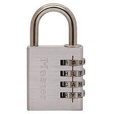
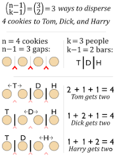
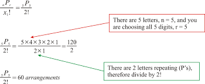

Combinatorics and Permutations
Combinatorics and Permutations is, put simply, in how many ways can something be rearranged. A common example of this is the combination lock, it requires a certain digit code in order to unlock it. The name is a bit misleading as it is not a true combination, it is a permutation.
Difference between permutations and combinations
While permutations and combinations seem like the same thing, they are actually not.
Combinations
Combinations are where order does not matter. For example, a plate of food could be a combination of beef, broccoli, and corn. It does not matter what order the food comes in because it is all on the same plate.
Permutations
Permutations are like combinations, but they have to be in order. For example, the combination lock has to be in a specific order, such as 1-2-3-4 in order to work. In reality they should be called permutations locks and not combination locks.
Permutation variants
Permutation forms can vary from repetitive to non-repetitive
Repetitive
A combination lock is repetitive, it can repeat the same number more than once. For example, 1-1-1-1.
Non-repetitive
Positions in a race is non-repetitive, you can't have Michael Phelps finish first and second.
Applications
Permutations and Combinatorics have many uses from combination locks to possible outcomes of a race.
Locks
In a digit combination lock there are 10 ways to arrange each dial. For the first dial there are ten possible combinations for the lock. For the second combination there are 10 possible combinations for each combination on the first, so there are 10 times 10 possible combinations, thus there are 100 ways to arrange a 2-dial lock and 10000 ways to arrange a 4-dial lock.
Races

In a race once a person has finished they cannot be chosen again so in a 10 person race there are 10 ways for the first person the finish. Second place has 9 ways to be arranged as the person who finished can't also be in second place and so on. Thus there are 90 ways to arrange the first and second place in a 10 person race, and 720 ways to arrange first, second, and third place in a 10 person race.
Concepts
There are many different fun concepts in Combinatorics, such as letter rearrangment or stars and bars
Stars and Bars
Stars and Bars is my personal favorite concept and it covers how items can be distributed. Stars and bars is also known as sticks and stones for a good reason, it is a good way to visualize it. The basic idea of sticks and stones is to split up a certain amount of stones using sticks. How many ways is there to split up 3 stones among two people? This can be represented by 3 stones and 1 stick. The stick seperates the stones into two different categories for each person. This results in 0-3, 1-2, 2-1, and 3-0 as the possible combinations. The formula for this is the factorial of the stones and the sticks add together. For this example it is 1+3=4 which results in 4x3x2x1. This is then divided by the factorial of the sticks times the factorial of the stones hence 1x3x2x1. As a result the answer is 4x3x2x1/1x3x2x1=4. This is incredibly usefull for harder versions of this and can even be applied to other topics in math.
Letter rearragnment
Another interesting concept is letter rearrangment. It concerns the number of ways that letters in a word can be rearranged. It is similar to non-repetitive permutations in that it is representated by a factorial. For example, cat can be rearranged 3!=6 times. It is also different in the aspect of what happens with duplicates. For example, little has 6 letters so it should be expected to have 6! combinations, but it does not account for the duplicate Ls. Little and Little (the Ls are switched) are both counted, but they are the same. This can be combatted by dividing by 2!.